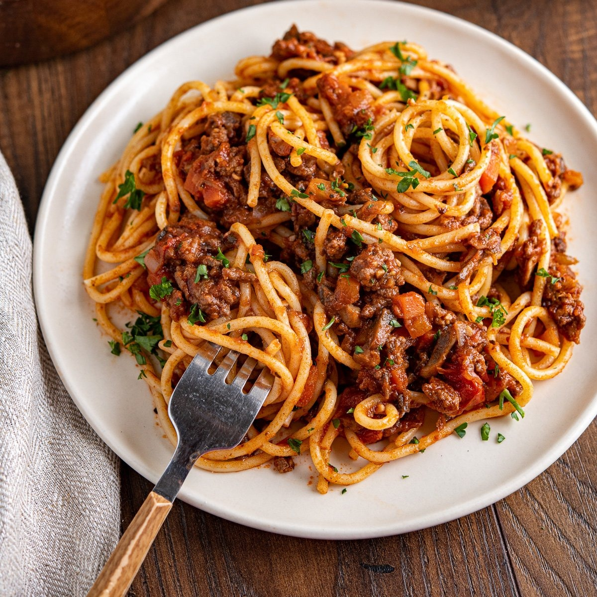

Classic Spaghetti Bolognese

Description
This authentic Italian spaghetti bolognese recipe is rich, hearty and absolutely delicious. The secret lies in slowly simmering the sauce to develop deep, complex flavors. This recipe takes time but is relatively easy to make and delivers restaurant-quality results.
Ingredients
- Pasta: 1 pound of high-quality spaghetti
- Meat: Ground beef and ground pork for authentic flavor
- Vegetables: Finely diced onions, carrots, and celery (soffritto)
- Garlic: Fresh garlic cloves, minced
- Wine: Dry red wine for depth of flavor
- Tomatoes: Whole San Marzano tomatoes and tomato paste
- Dairy: Whole milk and Parmigiano-Reggiano cheese
- Seasonings: Bay leaves, salt, black pepper, and fresh herbs
Steps
- Prepare the soffritto (sautéed vegetables).
- Brown the meat mixture thoroughly.
- Add wine and reduce.
- Add tomatoes and simmer sauce.
- Cook pasta al dente.
- Combine pasta with sauce and serve with grated cheese.